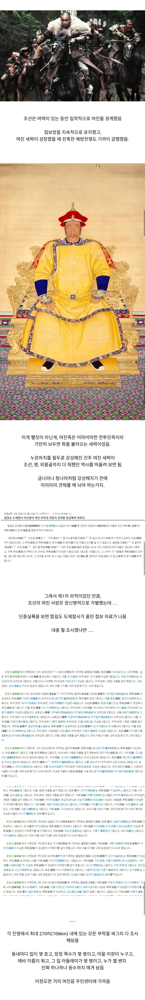
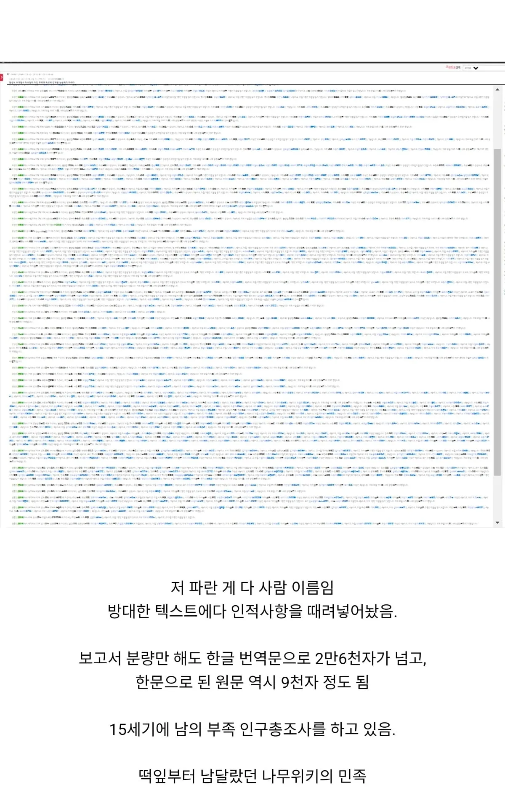

사실 군대가 든든하게 있으면 안해도 될 작업들..
군대를 어떻게든 효율적으로 쓰려고 관리들 갈아넣어서 정리 시킨거
든든한 군대는 유지비가 너무 많이듬
쌀먹의 민족
북방에 든든한 군대를 두고 첩보를 게을리하자 걔들이 회군을 하더라니까
군인 = 일꾼
든든하게 하면 나라 망함
반대지 오히려
강력한 첩보능력이 있다 = 군사력이 강하다
라고 보는게 더 보편적임
미국의 CIA는 미군이 든든하지 않다는 증거임?
한국역사는 일단 까고본다
이것이 바로 고렙의 품격
이정도면 그냥 조선이라고 봐야하지않음?
조선의 하나원에 여진족이 귀순하면 "거기 개천 오른편 마을의 복숭아 나무집에 ㅇㅇ라고 있지?" 하면서 인적사항 확인했을듯.
하나원 탈북민 인터뷰는 조선시대부터 이어진 유구한 전통...!
여진집착 멘헤라ㄷㄷ
대규모 총병과 소형화된 야전포가 상용화되면 기병의 진형 돌파라는 전근대 치트키가 막히는데
이거 막히기 전에 기어이 마지막의 마지막 원코로 모인 만주기병이 중원을 먹어버림ㅋㅋㅋㅋㅋ
화약무기는 이미 후금 수백년전에 이미 상용화되었고 명나라 말기는 좆돼도 이상할게 없는 꼬라지였긴함
아 누가 시뮬레이터로 영국 레드코트랑 만주 팔기군 평원에서 맞붙는거 만들어줬음 좋겠당
프랑스가 이미 해줬잖아 결과는 개처바름
레드코트 지휘관이 원균이고 만주 팔기 지휘관이 이순신이라면?
원균은 델타포스 지휘해도 안될거같아
아! 맘대로 돌격해서 꼬라박은거 말고!
어째서 왜는 경계를 안하셧소 ㅠㅠ
하긴 했는데 미친놈들이 20만 드랍할거 어케 예상함 ㅋㅋㅋㅋㅋ
경계했어 그래서 전쟁전에 이순신이 육군 소령에서 해군 투스타 원큐에 간거
사관은 어느시대 어디에나 있었구나
조선도 고려도 저랬음
조선은 왕조의 시작이나 돈 때문에 군대가 없어서 그나마 덜했지
고려 때 여진이랑 전쟁한 거 보면 한민족도 절대 평화로운 민족이 아님
이런 저런 이유로 여진 추장들 모아놓고 파티 열고 몰살시키고 그럼 ㅋㅋㅋ
저때 고려 왕 중 하나는 유언으로 여진 전쟁 계속 하라고 얘기하기도 하고....
탈북민이 처음 남한에 왔을때 질문썰 보면 지금도 하는거 같긴함..
저렇게까지 했는데 결국 청나라로 발전하는걸 못막은건 왜일까..안타깝군
담당일진 신립이 그만 탄금대에서...
임진왜란으로 북부 전력 약해진것도 크고..이괄의난으로 북방 정예병력 삭제.. 아아 인조!
그 시대의 운명은 그럴 수밖에 없음 인간의 의지로 막아지는게 아니라고 생각함.
왜란 + 이괄의 난
군대가 걍 개박살 남
저기서 세금까지 거두면 안 쳐들어왔을텐데
저 덕분에 여진은 발랐는데 문제는 왜..
여진족척결 다섯글자에 환호성
그런데 여진족이 한국인과 아예 같은 유전자로 공통 선조라던데 고조선 부여 시기에..
동족혐오?
같은땅를 두고 싸우는 이민족이라 생각햇자나.
(같은 땅을 두고 싸우는 옆동네 애들인데 뭔가 말도 조금 다르고 문화도 다르니까 )
조선시대에도 국정원이 있었군!
홍타이지가 저래서 조선이라면 치를 떨면서 거하게 복수하려고 칼을 갈고 있었는데 천연두 문제랑 명과의 싸움 때문에 조공국으로만 만들고 (인질이나 배상금 첨가) 바로 물러났지
심지어 쟤네도 구들장 쓰는 문화도 있었더라고. 사실 알고보면 걍 한민족 먼 친척쯤 되는거 아닌가 싶기도
누선족이었으면 경계안했을텐데
첩보력 뭔데